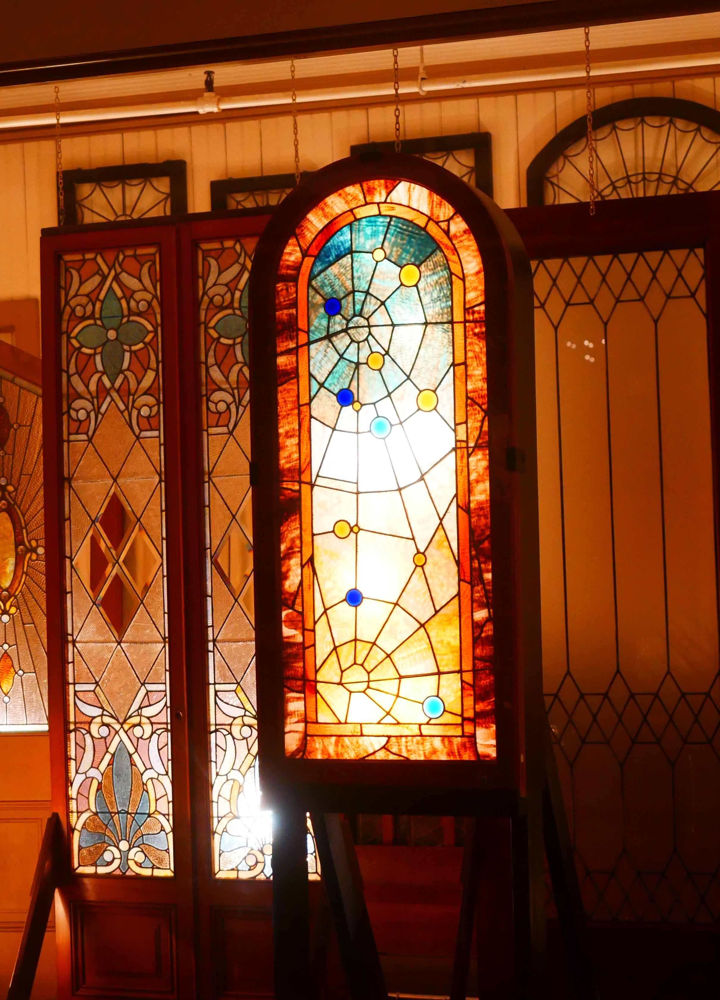

Spiderweb Stained-Glass Window
Winchester House | San Jose, California
The Artifact
Among the distinctive architectural features of the Winchester House is a stained-glass window containing a spiderweb design. Its decorative pattern reflects the unusual craftsmanship and varied ornamental details found throughout the residence.

Its Story
Stained glass became a popular decorative element in elaborate homes during the nineteenth century. Colored glass allowed homeowners to introduce artistic patterns, control incoming light, and add visual interest to interior spaces.
The Winchester residence contains numerous unusual windows, doors, and architectural details. The spiderweb window stands out because its pattern resembles a natural structure rather than a conventional geometric or floral arrangement.
Although the house has acquired a reputation for supernatural mystery, the window itself does not establish a paranormal connection. Its historical significance lies in its design and its place within the home's architectural character.
Connection to the Building
Sarah Winchester's house underwent extensive changes and additions over many years. Its combination of conventional Victorian ornament and unusual architectural features has become central to its public identity.
The spiderweb window provides a physical example of the decorative complexity that continues to attract attention to the house. Examining such details separately from the legends surrounding the property allows visitors to appreciate its architecture without treating folklore as established historical fact.
Sources and Image Credit
Wikimedia Commons. (2022). Spiderweb stained glass Winchester Mystery House [Photograph by Sgerbic]. Original image and license information

Winchester Mystery House. Official historic property website